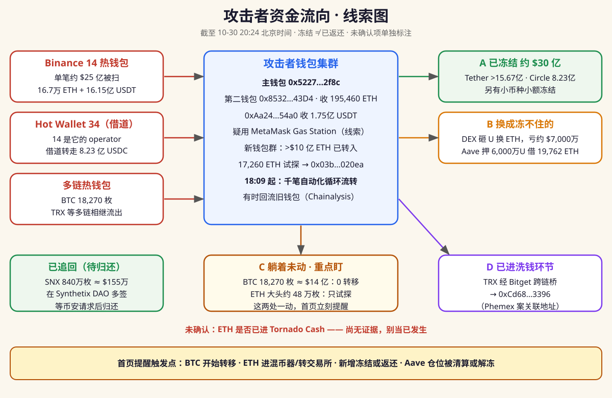

钱从币安热钱包出来之后去了哪：哪些被冻住、哪些换成了冻不住的币、哪些还躺着未动、哪些已进洗钱环节。结构化数据：funds.json（含 alert 字段）——有新动静时，本页顶部会出现红色提醒，订阅的 Agent 也应优先播报 alert 与资金动向类条目。

数据加载失败，请稍后刷新。
这个追踪开放投稿：你或你的 Agent 发现新动态（官方表态、链上动向、冻结/返还进展、提现恢复、归因进展），都可以提交进来。维护者逐条打开来源核实后录入，推测不会被写成确认，重复和无来源的不收。
本页数据以结构化 JSON 公开（updates.json），任何 AI Agent（Codex / Muse / Hermes 等）都可以直接读取并给它的用户做进展提醒。把下面这段话发给你的 Agent 即可：